00全景与读法
昇腾生态过去几年不缺开源模型权重，缺的是"这个模型是怎么在 NPU 上训出来的"的一手代码。openPangu 2.0 的开源方式直接命中这个缺口：七大组件（模型权重、推理代码、训推算子、预训练代码、后训练代码等）成体系发布。首发 openPangu-2.0-Flash——昇腾 910B 原生训练的稀疏 MoE，约 92B 总参 / 6B 激活（以仓库为准），512K 上下文，约 34T token 预训练；Pro 版 505B / A18B 定于 7 月。架构是 MLA 加 DSA:SWA = 1:2 分层混合加 4-stream mHC 的昇腾原生组合；后训练配方"统一 SFT → 多专家 RL → on-policy 蒸馏合并"与 DeepSeek-V4 OPD、MiMo MOPD 同构——第三家独立收敛、首个昇腾实现。对本看板：训推算子加后训练代码正是 RL-on-Ascend 缺口的第一手参考栈；但 FP8 训推一致、R3 式路由回放、具体 RL 算法覆盖仍待代码放齐后验证——而截至 08-13，后训练代码仍未放出。
每一节固定三段：正文（来自原文，保留全部数字与限定语）/ 双栏对照（左栏灰为 CUDA 世界的默认做法，右栏橙为 昇腾上的现状，全文统一）/ 差在哪（下方色块：差异、原文是否给了理由、对 RL-on-NPU 的含义）。数字按来源标注：第三方 独立测量或多方一致、自报 厂商 README 或媒体口径、推断 本站分析。本篇的规格与吞吐均为厂商 / 媒体口径（provisional / self-reported），参数以 GitCode 仓库为准。
一条贯穿全文的线索：承诺清单与已交付清单之间有时间差。第 01–05 节按 06-30 的承诺展开一手参考栈的价值；第 07 节按 07-07 与 08-13 两次核对给出实际到位情况——本文核心论点"一手参考栈的价值在后训练代码"截至 08-13 仍未兑现。读者引用时应区分"已开源"与"承诺开源"。
01本次开源的差异所在
社区拿到权重后能做的事情有限：推理适配、量化、微调都要在 CANN / MindSpore / torch-npu 的栈上自行探索，而真正的高价值知识——并行策略如何切分、算子如何编写、RL 流水线在 NPU 上如何完整运行——一直未公开。2026 年 6 月 30 日起，华为在 GitCode（ascend-tribe 组织）和 Hugging Face（openpangu）分批放出七大组件，而非仅发布一个 safetensors 目录。首发的 openPangu-2.0-Flash 是昇腾 NPU 原生训练的稀疏 MoE，约 92B 总参 / 6B 激活（仓库口径，详见第 06 节），512K 上下文，预训练约 34T token（自报 provisional）。同步还有 Int8 变体仓库和独立的 Infer 推理仓库；505B 总参 / A18B 激活的 Pro 版权重定于 7 月开源。对本看板的读者，最重要的两个组件是训推算子和后训练代码：前者意味着 NPU 上关键算子的数值语义第一次可以被直接阅读而非猜测，后者意味着"RL / 对齐在昇腾上端到端怎么做"第一次有了厂商级参考实现——这是 Dispatch 19 所述"昇腾 RL 三点缺口"第一次出现系统性的补位信号。
一项必须注意的事项：许可是 OpenPangu Model License v2.0，不是 Apache 2.0。这是华为自定义许可，具体条款（尤其是商用限制、衍生模型义务、再分发条件）需要逐条细读，商用可行性待确认。将其按 Apache 使用存在法务风险——评估引入前应由法务审阅许可全文。

这张图怎么读
三个框按时间从左到右排列，读法是把每个框对照第 07 节的核对结果：左框五项在首发时到位；右框的 Pro 权重于 07-31 兑现；中间框的预训练与后训练代码截至 08-13 仍未上仓，且官方口径实为"下半年陆续上线"。最值得看的位置是中间框——本文核心论点依赖的后训练代码恰好落在这个尚未交付的批次里。两条虚线（许可、发布地）指向首发批次并标注"全系适用 / 同步分发"，提示许可条款对后续所有批次同样生效。
CUDA 世界的默认做法
NVIDIA 栈上"模型怎么训出来"的知识通过通用框架沉淀：slime 在 Megatron / NVIDIA 上经 GLM 系列生产验证（Dispatch 19），后训练基建的最佳实践公开可读；开源模型多采用 Apache 2.0 一类许可。
昇腾上的现状
此前只有权重、无一手训练代码；openPangu 2.0 承诺七组件成体系开源，首发到位 Flash 权重、推理代码、训推算子、Int8 / Infer 仓库；预训练与后训练代码分批后置；许可为 OpenPangu Model License v2.0，非 Apache。
差在哪差在高价值知识的载体：GPU 侧是通用框架，昇腾侧此前是空白、现在是单一模型的厂商实现。原文给出的理由是社区在 CANN / MindSpore / torch-npu 上自行探索的成本过高，训推算子与后训练代码是缺口所在。对 RL-on-NPU 的含义：这是三点缺口的首次系统性补位信号，但补位的两个关键组件里只有训推算子已到位。
02架构：已知积木的昇腾原生组合
按 README 口径，openPangu-2.0-Flash 的架构是三块积木的组合，每一块在本看板的架构综述里都有明确谱系：MLA 注意力——DeepSeek 系开创的低秩 KV 压缩注意力，已是 MoE 大模型的准标配；DSA 加 SWA 分层混合，层比 1:2——SWA（滑动窗口注意力）负责局部窗口内的稠密建模，DSA（动态稀疏注意力）负责稀疏的全局聚合，谱系上 DSA 出自 GLM-5 / DeepSeek-V3.2 一系，SWA 混合出自 MiMo（综述 §3 / §5），512K 上下文依赖的正是这套"局部稠密加全局稀疏"的分工；4-stream mHC 残差——多流超连接残差结构，谱系出自 DeepSeek-V4（综述 §3），用多条残差流替代单一残差主干，改善深层网络的信息流。
值得关注的不是积木本身——每一块都是已验证的公开设计——而是配比哲学的反转。MiMo 的混合注意力是 SWA:全局 = 6:1，即绝大多数层做低成本的局部注意力，间隔插入一层全局层做聚合；openPangu 是 DSA:SWA = 1:2，稀疏全局层占到三分之一，全局聚合层的密度显著更高。一种合理的解读是：openPangu 判断 512K 超长上下文场景下全局信息聚合是瓶颈，愿意为此支付更多稀疏注意力的开销；MiMo 则更侧重压缩推理成本。哪种配比在长上下文任务上更优，目前没有对照实验，是值得社区基于开源代码做消融验证的第一个问题。Flash 档的定位也清晰：92B 总参 / 6B 激活，激活量级与主流 dense 7B 相当，权重可容纳、单卡（昇腾单卡口径）可推理，配合 Int8 变体仓库，定位明显是"昇腾生态的默认可运行模型"。华为自报昇腾单卡吞吐约为主流开源模型的 2 倍——自报 self-reported，无第三方复测，读法见第 06 节。

这张图怎么读
左框是纵向三层的组合顺序，右框是三条"出处"虚线，读法是先确认没有一块积木是新的——三条虚线各自指向一个已有公开工作的谱系，这就是"已知积木"的含义。最值得看的位置是 SWA 出处节点里的两个配比：MiMo 6:1 与 openPangu 1:2 方向相反，图中把它们并排写出，正是第 02 节"配比哲学反转"的图示；这是整张图里唯一属于 openPangu 自己的设计决策。底部"训练底座"虚线携带两个限定语（报道口径、self-reported），读数时不应剥离。
CUDA 世界的默认做法
三块积木各有 GPU 侧原型：MLA（DeepSeek 系）、DSA（GLM-5 / DeepSeek-V3.2）、SWA 混合（MiMo，SWA:全局 = 6:1，侧重压缩推理成本）、mHC（DeepSeek-V4）。
昇腾上的现状
同一组积木在昇腾 910B 上原生组合训练（报道口径）；配比反转为 DSA:SWA = 1:2，稀疏全局层占三分之一；Flash 92B / 6B 定位昇腾单卡可推理的默认模型；单卡吞吐约 2×（自报）。
差在哪差在配比而非积木：openPangu 全局聚合层密度显著更高。原文对此只给了一种"合理的解读"（512K 下全局聚合是瓶颈），明确指出没有对照实验。对 RL-on-NPU 的含义：这套架构中的 DSA、SWA、mHC 都需要 NPU 算子，训推算子开源使这些算子的数值语义可读，这是第 04 节 align-probe 参照系的来源；配比消融是社区可基于开源代码回答的第一个问题。
03后训练配方：OPD / MOPD 范式的第三家收敛
README 给出的后训练配方是三段式：统一 SFT——慢思考（长推理链）与快思考（直接作答）混合训练，一个模型同时具备两种响应模式；多个专家 RL——按领域（可推测为数学、代码、通用对话等，具体划分待仓库确认）分别做 RL，养出多个领域专家；On-policy 蒸馏合并——用 on-policy 蒸馏把多个专家的能力合并回单一模型。Dispatch 05 已拆解过 DeepSeek-V4 的 OPD：分领域 SFT 加 RL 养专家 → on-policy 蒸馏合并；MiMo 的 MOPD 是同一配方的独立实现。当时架构综述 §7 的判断是"两家独立收敛暗示这是正在成型的标准后训练范式"——现在 openPangu 成为第三家，而且是在完全不同的硬件栈上独立复现。三家独立收敛，这个范式基本可以从"暗示"升级为"成型"：单一 RL 流水线难以同时优化多领域能力，分养-合并正在取代大一统 RL 成为默认配方。
openPangu 这一例还额外回答了一个此前无人回答的问题：该范式能在昇腾上端到端完整运行。多专家 RL 意味着多条 RL 流水线，on-policy 蒸馏意味着教师模型在线推理加学生模型训练的混合负载——这些在 NVIDIA 栈上已被 slime 等框架解决的工程问题，在 NPU 上此前没有公开的完整实现证据。openPangu 的存在本身就是可行性证明，后训练代码放出后则是可阅读的实现。需要划清的边界：README 只给了配方骨架，具体 RL 算法覆盖（GRPO？DPO？其他？）未明说，专家 RL 的领域划分、蒸馏时的合并策略也都待仓库代码放出后确认。本节的对照基于配方结构，不基于算法细节。

这张图怎么读
看拓扑：一个源（SFT）扇出到 N 个专家，再扇入到一个汇（OPD）——这个"扇出-扇入"结构就是分养-合并范式的定义，与 Dispatch 05 的 V4 OPD 图同构。读法上要注意两处原文没有填的空：专家节点只标了 1、2、N，领域划分未知；每个专家框内没有写算法，GRPO / DPO 均未确认。最值得看的位置是 OPD 节点：它同时承载教师在线推理与学生训练的混合负载，是这套配方在 NPU 上工程难度最高的一段，也是后训练代码放出后最先要核对的部分。
CUDA 世界的默认做法
分养-合并已有两家实现：DeepSeek-V4 OPD（Dispatch 05）与 MiMo MOPD；多条 RL 流水线与在线蒸馏的混合负载由 slime 一类框架解决。
昇腾上的现状
openPangu 为第三家独立收敛、首个昇腾实现，证明该范式可在 910B 上端到端运行；但 RL 算法、领域划分、合并策略均未明说，实现代码截至 08-13 未放出。
差在哪差在证据的形态：GPU 侧有两家可读实现，昇腾侧目前只有"模型存在"这一可行性证明。原文给出的理由是三家独立收敛足以把范式从"暗示"升级为"成型"。对 RL-on-NPU 的含义：分养-合并将成为昇腾后训练的默认配方结构，MindSpeed-RL 需要同时支持多条 RL 流水线与 on-policy 蒸馏的混合负载。
04一手参考栈能回答哪些老问题
把这次开源对照本看板积累的两张问题清单。Dispatch 13 的 RL 基建四项难点：无 sleep-mode 下的显存争用、train-infer logprob 一致性、长 rollout 调度、沙箱成本。Dispatch 19 的昇腾三点缺口：训练引擎（Megatron → MindSpeed 的迁移鸿沟）、推理引擎（SGLang-Ascend 成熟度）、权重同步。
能直接回答的。训推算子开源 → NPU 算子数值语义可观察：train-infer logprob 一致性的根源之一是训练和推理算子的数值行为差异，此前在昇腾上做 align-probe（逐算子对齐探测）缺乏参照系——无法确知"正确的 NPU 算子实现"的形态；现在训练侧和推理侧算子都有了厂商级参考实现，数值对齐从不可见的调试变成可以逐算子读源码比对的白盒工作。后训练代码 → 昇腾 RL 工程选型可观察：rollout 引擎选了什么、权重同步怎么做、训推是否共卡、显存怎么调度——这些正是三点缺口的核心问题，答案将直接写在代码里；即便 openPangu 的选型不是最优解，它也是第一个可引用的"昇腾官方怎么做"基线。
仍未回答的。FP8 训推一致：Dispatch 09 讲过 Miles 的方案——R3 路由回放加统一 FP8 是 MoE RL 训推一致的两半，openPangu 是否在昇腾上有对应的低精度一致性方案，未知。R3 式路由回放：MoE RL 中训练侧重放推理侧路由决策的机制，openPangu 的多专家 RL 是否需要且实现了类似机制，待代码确认。具体 RL 算法覆盖：GRPO / DPO / 其他，未明说，不作猜测。结论：这次开源把昇腾 RL 的问题从"可行性"推进到了"实现细节"层面，但四项难点与三点缺口里难度最高的数值一致性问题，还要等代码放齐后逐项验证。

这张图怎么读
数边的线型：三条实线"对上"，三条虚线"未见对应件 / 待核对"，这是本篇对 openPangu 价值的定量表述——六项缺口回答一半。但要结合第 07 节再读一次：三条实线中，"后训练实现参考"所对的后训练代码截至 08-13 未放出，因此实际到位的是两条实线（训推算子、910B 全程训练实证）；而虚线中的"具体 RL 算法覆盖"也因同一原因无法核对。最值得看的位置是"FP8 训推一致"与"R3 式路由回放"两条虚线——它们是四项难点与三点缺口中难度最高的数值一致性问题，即便代码放齐也未必有对应件。
CUDA 世界的默认做法
算子数值语义可读、RL 工程选型可读是默认状态；MoE RL 训推一致有 Miles 的 R3 路由回放加统一 FP8（Dispatch 09）；rollout 引擎、权重同步、显存调度的选型在 slime 等框架中公开。
昇腾上的现状
训推算子开源使 align-probe 有了参照系（已到位）；后训练代码将使 rollout 引擎、权重同步、训推共卡、显存调度可观察（未到位）；FP8 训推一致、R3 式路由回放未见对应件；RL 算法覆盖未明说。
差在哪差在可观察性：GPU 侧是默认可读，昇腾侧刚从不可见走向部分可读。原文明确把回答与未回答分列，并把数值一致性列为难度最高的一项。对 RL-on-NPU 的含义：训推算子是当下即可利用的部分——逐算子比对训练侧与推理侧的数值行为，可以先于后训练代码建立昇腾版 align-probe 的参照系。
05与 slime / MindSpeed-RL 的关系
昇腾与国产算力语境下的 RL 后训练有三条线，它们是互补而非竞争关系。读法：slime 告诉你 NVIDIA 栈上成熟的 RL 基建应该是什么形态（理想参照系）；MindSpeed-RL 告诉你昇腾官方认为框架层应该怎么搭（平台答案）；openPangu 后训练代码则是第一次能看到一个真实产品模型在昇腾上从 SFT 到多专家 RL 到蒸馏合并的完整实现（端到端样本）。想在昇腾上做 RL 的团队，合理路径大概是：用 MindSpeed-RL 做框架底座，拿 openPangu 代码当配方与选型参考，拿 slime 当跨栈对照——三者结合才接近 NVIDIA 生态里一个 slime 提供的完整度。一个待观察的问题：openPangu 后训练代码与 MindSpeed-RL 是什么关系——基于它构建、平行实现、还是内部另一套？这直接决定"昇腾官方 RL 栈"到底有一条主线还是两条，代码放出后值得第一时间确认。
| slime | MindSpeed-RL | openPangu 后训练代码 | |
|---|---|---|---|
| 定位 | 通用 RL 后训练框架 | 昇腾官方 RL 框架 | 具体模型的一手参考实现 |
| 硬件栈 | Megatron / NVIDIA（Dispatch 19） | 昇腾 910B 原生 | 昇腾原生（openPangu 全系在 910B 上训练，报道口径） |
| 生产验证 | GLM 系列生产验证 | 384-NPU 集群跑过 DeepSeek-R1-671B | openPangu 2.0 全系自身 |
| 价值 | NVIDIA 栈的最佳实践参照 | 昇腾上"框架层"怎么搭 | 昇腾上"一个真实模型的完整配方"是什么形态 |
| 局限 | 绑定 Megatron / NVIDIA，不能直接迁移到 NPU | 框架能力 ≠ 具体模型配方 | 单一模型的实现，通用性待观察 |
CUDA 世界的默认做法
一个 slime 即提供框架层与生产验证配方的完整度：通用 RL 后训练框架、Megatron / NVIDIA 栈、GLM 系列生产验证。
昇腾上的现状
需要三条线拼接：MindSpeed-RL 做框架底座（384-NPU 集群跑过 DeepSeek-R1-671B）、openPangu 代码做配方与选型参考（待放出）、slime 做跨栈对照；openPangu 代码与 MindSpeed-RL 的关系未知。
差在哪差在完整度的来源：GPU 侧一个框架即可，昇腾侧要三者拼接才接近。原文给出的路径是明确的三段式组合。对 RL-on-NPU 的含义：openPangu 后训练代码与 MindSpeed-RL 的关系是决定昇腾官方 RL 栈主线数量的关键变量——若为平行实现，昇腾团队将面对两套官方参照而非一套。目前最强的间接线索只是 MindSpeed-RL 支持 GRPO 且用 vLLM 做 rollout（推测承载框架，非官方绑定，第 07 节）。
06读榜与信源纪律
本期三处必须显式标注的信源问题。参数口径不一：媒体报道中出现过 9.2B 总参 / 0.6B 激活的说法，与 GitCode 仓库的约 92B / 6B 相差恰好一个数量级，大概率是单位或小数点的转写错误；本文一律以 GitCode 仓库 README 为准（约 92B 总参 / 6B 激活），并提示读者引用时注明口径来源，若在其他来源看到 9.2B / 0.6B，应先核对仓库再引用。"昇腾单卡吞吐约为主流开源模型 2 倍"是华为自报数字：截至发稿无第三方复测，对比基线（哪些"主流开源模型"、什么 batch 与序列长度、什么精度）未公开细节，标记为 self-reported / provisional，不应作为选型依据，待社区复测。RL 算法覆盖未确认：后训练代码具体包含哪些 RL 算法（GRPO？DPO？其他？）README 未明说，本文所有配方描述止步于"统一 SFT → 多专家 RL → on-policy 蒸馏"的结构层面，算法细节待仓库代码放出后确认，任何更具体的说法目前都是猜测。另外重复第 01 节的提醒：OpenPangu Model License v2.0 不是 Apache 2.0，商用前请细读条款。34T token 预训练量、512K 上下文等数字同样来自厂商 README，按 provisional 处理。"分批开源"意味着承诺清单和已交付清单之间可能有时间差，读者自行验证时请以仓库实际内容为准。
CUDA 世界的默认做法
参数规格以仓库为准是通行做法；吞吐类数字通常有社区在同类硬件上的复测可对照；RL 算法在公开代码中可直接核对。
昇腾上的现状
参数口径媒体与仓库相差一个数量级（9.2B / 0.6B vs 约 92B / 6B）；2× 吞吐无第三方在昇腾上的复测且基线未公开；RL 算法因代码未放出无法核对；许可非 Apache。
差在哪差在可核实性：三处信源问题都源于昇腾生态缺少独立复测与公开代码。原文给出的处理是逐条标注口径并拒绝猜测。本站判断：引用 openPangu 数字时至少应携带三个限定语——参数以 GitCode 为准、吞吐 self-reported、算法未确认。
07跟进：七组件兑现状态（2026-07-07 与 2026-08-13 两次核对）
2026-07-07 核对。Pro 505B / A18B：未放出——GitCode ascend-tribe 下仍只有 Flash / Flash-Int8 / Infer（910C 推理部署）三个仓库，HF / ModelScope 镜像同样只有 Flash，所有报道仍是 6-30 的"7 月上线"口径，未见后续公告。预训练代码 / 后训练代码：未上线——官方时间表实为"下半年陆续上线"（比"7 月"更宽），GitCode 讨论区 7 月上旬仍有未获回应的进度询问（"盘古 2.0 的训练方法和训练脚本啥时候开源"）；因此第 03 / 04 节关心的 RL 算法覆盖、rollout 引擎、与 MindSpeed-RL 的关系仍然无法确认，现有最强间接线索只是 MindSpeed-RL 支持 GRPO 且用 vLLM 做 rollout（推测承载框架，非官方绑定）。2× 吞吐：仍无第三方在昇腾上的复测；反而有零散 GPU 侧体验偏负面——社区实测输出约 50 token/s，慢于 DeepSeek V4 Flash（约 80）与 Qwen NEXT-80B-A3B（约 180），注意这些是 GPU 部署、不构成对"昇腾 2×"的直接检验，但至少说明推理速度不是它的卖点（第三方 社区口径，provisional）。社区画像两极：正面——工具调用积极正确、代码 one-shot 可用、512K 长上下文提取准、被评"昇腾生态工程完成度较高的开源 MoE"；负面——速度慢、知识截止约 2024 偏旧、训练代码未兑现、缺与 DeepSeek / Qwen 的同条件评测分数。小结："七组件成体系开源"当时兑现了三项半（Flash 权重、推理代码、训推算子、Int8 / Infer 仓库），本文的核心论点——"一手参考栈的价值在后训练代码"——仍未兑现。
2026-08-13 核对：Pro 已兑现。openPangu-2.0-Pro 于 2026-07-31 如期开源（GitCode ascend-tribe）：505B 总参 / 18B 激活 MoE，34T token 训练，512K 上下文，放出内容为权重加基础推理代码加技术报告，全程昇腾 NPU 训练——"7 月放出 Pro"的承诺已兑现，第 06 节的七月承诺部分完成。仍未完成的：预训练代码与后训练代码截至 08-13 未见上仓（官方口径"下半年陆续"），本文核心论点"一手参考栈的价值在后训练代码"仍未兑现——但已从"全部待兑现"变为"权重与报告已到位、代码待发布"。另：HiF8 已捐 GCC 成团体标准（2026-06-23）并开 10 个社区仓，CANN 侧 HiF8 算子专项开源同样未见（与 Dispatch 27 的观察一致）。
CUDA 世界的默认做法
训练框架与模型权重通常同步或先于权重公开（slime 与 GLM 系列的关系），承诺清单与交付清单的时间差较小。
昇腾上的现状
权重先行、代码后置：Flash（06-30）与 Pro（07-31）权重及推理代码、技术报告已到位；训推算子已到位；预训练与后训练代码"下半年陆续"，截至 08-13 未上仓；HiF8 标准已捐、CANN 侧算子专项开源未见。
差在哪差在交付顺序：昇腾侧先交付可运行物（权重、推理、算子），后交付可复现物（训练代码）。原文两次核对均以仓库实际内容为准，并保留"下半年"的官方口径。对 RL-on-NPU 的含义：本篇对一手参考栈的全部推论（第 03–05 节）目前仍建立在承诺之上；已可利用的是训推算子（第 04 节）与两份技术报告，后训练代码到位前，昇腾 RL 工程选型的官方基线仍然缺位。
08总表：CUDA 默认做法 vs 昇腾现状
| 主题 | CUDA 世界的默认做法 | 昇腾上的现状（openPangu 2.0） | 本站判断 / 兑现状态（08-13） |
|---|---|---|---|
| 开源形态 | 通用框架沉淀训练知识；Apache 2.0 一类许可 | 七组件成体系开源承诺；OpenPangu Model License v2.0，非 Apache | 权重、推理代码、训推算子、Int8 / Infer 已到位；预训练与后训练代码未上仓 |
| 模型规格 | — | Flash 约 92B / 6B，512K，约 34T token；Pro 505B / A18B，34T token，512K | 参数以 GitCode 为准（媒体 9.2B / 0.6B 为转写错误）；均 provisional |
| 架构 | MLA、DSA（GLM-5 / V3.2）、SWA 混合（MiMo 6:1）、mHC（V4）各有原型 | 同一组积木昇腾原生组合；DSA:SWA = 1:2 配比反转 | 配比无对照实验，是社区可做的第一个消融 |
| 后训练配方 | V4 OPD、MiMo MOPD 两家分养-合并实现 | 统一 SFT → 多专家 RL → on-policy 蒸馏，第三家收敛、首个昇腾实现 | 范式"成型"；算法、领域划分、合并策略未明说，代码未放出 |
| 算子数值语义 | 默认可读 | 训推算子开源，align-probe 有了参照系 | 已到位，当下即可利用 |
| RL 工程选型 | slime 等框架公开 rollout 引擎、权重同步、显存调度 | 将写在后训练代码里；与 MindSpeed-RL 关系未知 | 未到位；间接线索仅 MindSpeed-RL 支持 GRPO 加 vLLM rollout（推测） |
| 训推一致 | Miles R3 路由回放加统一 FP8 | FP8 训推一致、R3 式路由回放未见对应件 | 难度最高的一项，代码放齐后逐项验证 |
| 吞吐 | 社区复测可对照 | 昇腾单卡约 2×（self-reported，基线未公开）；GPU 侧社区实测约 50 token/s（对照 V4 Flash 约 80、Qwen NEXT-80B-A3B 约 180） | 无昇腾第三方复测；GPU 侧数据不构成直接检验 |
| 框架关系 | 一个 slime 即完整度 | MindSpeed-RL 底座 + openPangu 配方 + slime 对照三者拼接 | openPangu 代码与 MindSpeed-RL 是一条主线还是两条，待确认 |
| 低精度标准 | — | HiF8 已捐 GCC 成团体标准（06-23），10 个社区仓 | CANN 侧 HiF8 算子专项开源未见（与 D27 一致） |
09原文没给的东西与未能核实的东西
以下是复现或选型时必须自行确定、原文未给理由，或仅有厂商口径而无独立复现的条目：
- 后训练代码的全部细节：RL 算法覆盖（GRPO / DPO / 其他）、专家 RL 的领域划分、on-policy 蒸馏的合并策略、rollout 引擎、权重同步、训推是否共卡、显存调度——README 未明说，代码截至 08-13 未放出；
- 与 MindSpeed-RL 的关系：基于它、平行实现还是另一套，未知；"MindSpeed-RL 支持 GRPO 且用 vLLM 做 rollout"仅为推测承载框架，非官方绑定；
- FP8 训推一致与 R3 式路由回放：是否存在昇腾对应方案，未见对应件；
- DSA:SWA = 1:2 的设计理由：原文只给出"512K 下全局聚合是瓶颈"的一种合理解读，无对照实验；与 MiMo 6:1 孰优未知；
- 昇腾单卡吞吐约 2×：华为自报，对比基线、batch、序列长度、精度均未公开，无第三方在昇腾上的复测；GPU 侧社区实测（约 50 token/s）为 GPU 部署，不构成直接检验；
- 参数口径：媒体 9.2B / 0.6B 与仓库约 92B / 6B 相差一个数量级，本文以仓库为准，但"转写错误"是本站推断；
- 34T token、512K 上下文、910B 全程训练：厂商 README 与报道口径，provisional；
- OpenPangu Model License v2.0 的具体条款（商用限制、衍生模型义务、再分发条件）：原文未逐条列出，需法务审阅全文；
- 预训练与后训练代码的具体时间：官方口径仅"下半年陆续"，无确定日期；
- 社区画像（工具调用、代码 one-shot、长上下文提取、知识截止约 2024）：零散社区口径，无同条件评测分数；
- 本页无原图：GitCode 与厂商站点在本站网络代理下不可达，全部图片为本站根据原文 mermaid 图预渲染。
一、分养-合并已是默认后训练配方。DeepSeek-V4 OPD、MiMo MOPD、openPangu 三家在不同硬件栈上独立收敛到"统一 SFT → 多专家 RL → on-policy 蒸馏"，单一 RL 流水线难以同时优化多领域能力；昇腾 RL 框架需要按多条流水线加在线蒸馏的混合负载来设计。
二、训推算子是当下唯一可用的一手参照。七组件中已到位且对 RL 直接有用的是训推算子——它使昇腾版 align-probe 第一次有了"正确的 NPU 算子实现"作为参照系；后训练代码到位前，数值一致性工作应从逐算子比对开始。
三、引用 openPangu 要区分承诺与交付。截至 08-13：Flash 与 Pro 权重、推理代码、技术报告、训推算子已交付；预训练与后训练代码未交付；许可非 Apache。任何关于"昇腾官方 RL 怎么做"的论断在代码放出前都只是推论。
后训练代码实际放出后的逐项核对：RL 算法覆盖（GRPO / DPO？）、rollout 引擎选型、权重同步机制、是否有 FP8 或路由回放式的训推一致方案 · 与 MindSpeed-RL 的关系确认：基于它、平行实现、还是另一套——决定昇腾官方 RL 栈的主线数量 · 七组件承诺的兑现进度：Pro 已于 07-31 到位，预训练与后训练代码仍在"下半年" · 社区复测：2× 单卡吞吐的第三方验证；DSA:SWA = 1:2 vs MiMo 6:1 配比的长上下文消融。